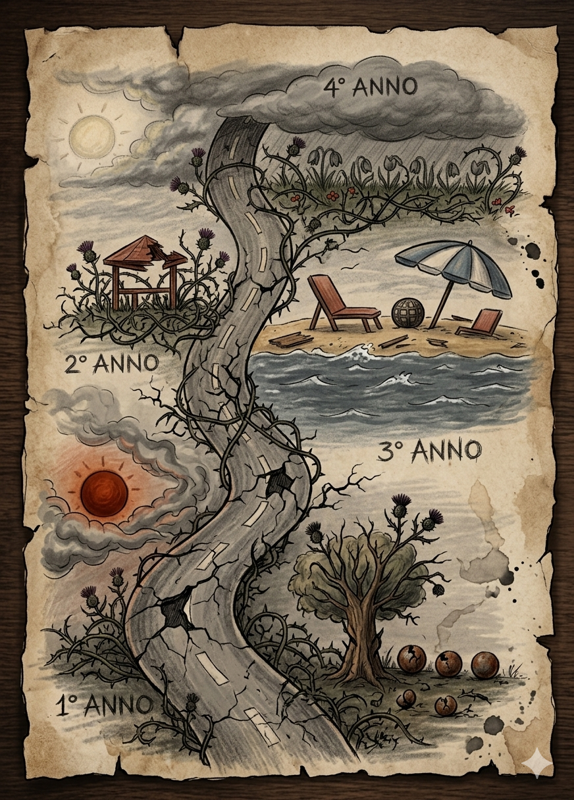

Ogni tappa ha lasciato un segno: le persone incontrate, le sfide superate e le competenze costruite giorno dopo giorno.
Un disegno che racconta il viaggio — fatto a mano.

Disegno originale · 2026Conclusione del ciclo scolastico obbligatorio e scelta del percorso professionale in ambito informatico.
Inizio del percorso triennale. Prime basi di hardware, sistemi operativi e fondamenti della rete.
Approfondimento di reti, manutenzione hardware e primo contatto con il mondo del lavoro.
Esperienza nel data entry e nella gestione database, precisione e organizzazione dei dati digitali.
Anno conclusivo del triennio con focus sulla preparazione all'esame di qualifica professionale.
Conseguimento della qualifica professionale EQF3 come Operatore Informatico.
Percorso di specializzazione come Tecnico Informatico (IV anno), focus su sistemistica.
Assistenza tecnica, riparazione dispositivi mobili e gestione del rapporto con il cliente.
Conseguimento del diploma professionale EQF4 come Tecnico Informatico.